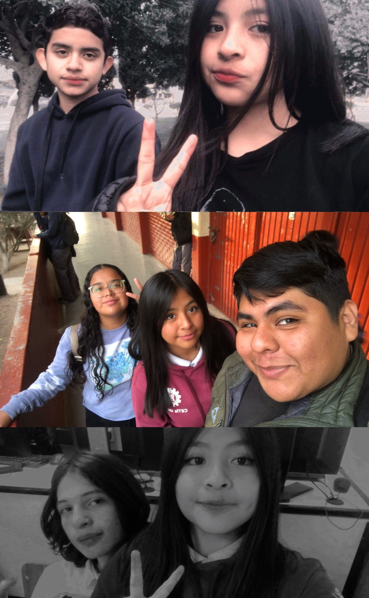

Práctica 1: Portada de la escuela --->

<--- Práctica 2: Canción
Práctica 3: Cuento --->
<--- Práctica 4: Receta
Práctica 5: Historia de HTML --->
<--- Práctica 6: Mis mascotas
Práctica 7: Mis top 10 --->

<--- Práctica 8: Días festivos
Práctica 9: Autobiografía --->